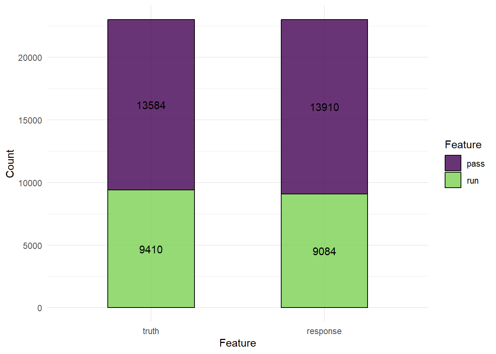

rm(list = ls())
library(mlr3verse)
## Warning: package 'mlr3verse' was built under R version 4.2.3
## Loading required package: mlr3
## Warning: package 'mlr3' was built under R version 4.2.3
library(mlr3pipelines)
library(mlr3filters)44 mlr3实现多模型比较
前面介绍了使用tidymodels进行二分类资料的模型评价和比较，不知道大家学会了没？
我之前详细介绍过mlr3这个包，也是目前R语言机器学习领域比较火的R包了，今天说下这么用mlr3进行二分类资料多个模型的评价和比较。
44.1 加载R包
首先还是加载数据和R包，和之前的数据一样的。
44.2 建立任务
然后是对数据进行划分训练集和测试集，对数据进行预处理，为了和之前的tidymodels进行比较，这里使用的数据和预处理步骤都是和之前一样的。
# 读取数据
all_plays <- readRDS("./datasets/all_plays.rds")
# 建立任务
pbp_task <- as_task_classif(all_plays, target="play_type")
# 数据划分
split_task <- partition(pbp_task, ratio=0.75)
task_train <- pbp_task$clone()$filter(split_task$train)
task_test <- pbp_task$clone()$filter(split_task$test)44.3 数据预处理
建立任务后就是建立数据预处理步骤，这里采用和上篇推文tidymodels中一样的预处理步骤：
# 数据预处理
pbp_prep <- po("select", # 去掉3列
selector = selector_invert(
selector_name(c("half_seconds_remaining","yards_gained","game_id")))
) %>>%
po("colapply", # 把这两列变成因子类型
affect_columns = selector_name(c("posteam","defteam")),
applicator = as.factor) %>>%
po("filter", # 去除高度相关的列
filter = mlr3filters::flt("find_correlation"), filter.cutoff=0.3) %>>%
po("scale", scale = F) %>>% # 中心化
po("removeconstants") # 去掉零方差变量可以看到mlr3的数据预处理与tidymodels相比，在语法上确实是有些复杂了，而且由于使用的R6，很多语法看起来很别扭，文档也说的不清楚，对于新手来说还是tidymodels更好些。目前来说最大的优势可能就是速度了吧。。。
如果你想把预处理步骤应用于数据，得到预处理之后的数据，可以用以下代码：
task_prep <- pbp_prep$clone()$train(task_train)[[1]]
dim(task_train$data())
## [1] 68982 26
task_prep$feature_types
## id type
## 1: defteam factor
## 2: defteam_score numeric
## 3: defteam_timeouts_remaining factor
## 4: down ordered
## 5: goal_to_go factor
## 6: in_fg_range factor
## 7: in_red_zone factor
## 8: no_huddle factor
## 9: posteam factor
## 10: posteam_score numeric
## 11: posteam_timeouts_remaining factor
## 12: previous_play factor
## 13: qtr ordered
## 14: score_differential numeric
## 15: shotgun factor
## 16: total_pass numeric
## 17: two_min_drill factor
## 18: yardline_100 numeric
## 19: ydstogo numeric这样就得到了处理好的数据，但是对于mlr3pipelines来说，这一步做不做都可以。
44.4 选择多个模型
还是选择和之前一样的4个模型：逻辑回归、随机森林、决策树、k最近邻：
# 随机森林
rf_glr <- as_learner(pbp_prep %>>% lrn("classif.ranger", predict_type="prob"))
rf_glr$id <- "randomForest"
# 逻辑回归
log_glr <-as_learner(pbp_prep %>>% lrn("classif.log_reg", predict_type="prob"))
log_glr$id <- "logistic"
# 决策树
tree_glr <- as_learner(pbp_prep %>>% lrn("classif.rpart", predict_type="prob"))
tree_glr$id <- "decisionTree"
# k近邻
kknn_glr <- as_learner(pbp_prep %>>% lrn("classif.kknn", predict_type="prob"))
kknn_glr$id <- "kknn"44.5 建立benchmark_grid
类似于tidymodels中的workflow_set。
选择10折交叉验证，建立多个模型，语法也是很简单了。
set.seed(0520)
# 10折交叉验证
cv <- rsmp("cv",folds=10)
set.seed(0520)
# 建立多个模型
design <- benchmark_grid(
tasks = task_train,
learners = list(rf_glr,log_glr,tree_glr,kknn_glr),
resampling = cv
)在训练集中，使用10折交叉验证，运行4个模型，看这语法是不是也很简单清稀？
44.6 开始计算
下面就是开始计算，和tidymodels相比，这一块语法更加简单一点，就是建立benchmark_grid，然后使用benchmark()函数即可。
# 加速
library(future)
plan("multisession",workers=12)
# 减少屏幕输出
lgr::get_logger("mlr3")$set_threshold("warn")
lgr::get_logger("bbotk")$set_threshold("warn")
# 开始运行
bmr <- benchmark(design,store_models = T) # 速度比tidymodels快很多
#saveRDS(bmr,file = "datasets/bmr.rds")
bmr44.7 查看模型表现
查看结果，也是支持同时查看多个结果的：
# 默认结果
bmr$aggregate()
## nr task_id learner_id resampling_id iters classif.ce
## 1: 1 all_plays randomForest cv 10 0.2696791
## 2: 2 all_plays logistic cv 10 0.2768839
## 3: 3 all_plays decisionTree cv 10 0.2801601
## 4: 4 all_plays kknn cv 10 0.3227799
## Hidden columns: resample_result# 查看多个结果
measures <- msrs(c("classif.auc","classif.acc","classif.bbrier"))
bmr_res <- bmr$aggregate(measures)
bmr_res[,c(4,7:9)]
## learner_id classif.auc classif.acc classif.bbrier
## 1: randomForest 0.7983164 0.7303209 0.1789120
## 2: logistic 0.7801990 0.7231161 0.1864776
## 3: decisionTree 0.7038680 0.7198399 0.2003211
## 4: kknn 0.7311780 0.6772201 0.221554944.8 结果可视化
支持ggplot2语法，使用起来和tidymodels差不多，也是对结果直接autoplot()即可。
library(ggplot2)
## Warning: package 'ggplot2' was built under R version 4.2.3
autoplot(bmr)+theme(axis.text.x = element_text(angle = 45))
喜闻乐见的ROC曲线：
autoplot(bmr,type = "roc")44.9 选择最好的模型用于测试集
通过比较结果可以发现还是随机森林效果最好~，下面选择随机森林，在训练集上训练，在测试集上测试结果。
这一步并没有使用10折交叉验证，如果你想用，也是可以的~
# 训练
rf_glr$train(task_train)
## Growing trees.. Progress: 69%. Estimated remaining time: 14 seconds.训练好之后就是在测试集上测试并查看结果：
# 测试
prediction <- rf_glr$predict(task_test)
head(as.data.table(prediction))
## row_ids truth response prob.pass prob.run
## 1: 5 pass pass 0.8407674 0.1592326
## 2: 6 run run 0.4135679 0.5864321
## 3: 15 run run 0.1719599 0.8280401
## 4: 20 pass pass 0.6567402 0.3432598
## 5: 29 run pass 0.6880750 0.3119250
## 6: 40 run pass 0.5459646 0.4540354混淆矩阵：
prediction$confusion
## truth
## response pass run
## pass 10664 3282
## run 2920 6128混淆矩阵可视化：
autoplot(prediction)
查看其他结果：
prediction$score(msrs(c("classif.auc","classif.acc","classif.bbrier")))
## classif.auc classif.acc classif.bbrier
## 0.7993217 0.7302775 0.1784343喜闻乐见ROC曲线：
autoplot(prediction,type = "roc")简单吗？